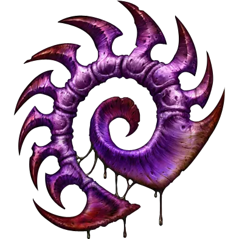

저그는 고대의 종족인 젤나가 아몬이 만든 2번째 종족으로, 저그 애벌레가 모든 저그의 DNA를 가져 변태하는 것을 기반하여 만들어졌다. 
저그는 '초월체'와 다른 정신체 (대군주 등 지위가 높은 개체들)만이 자아를 가지고 다른 저그들은 군단의식을 가지는 종족이다. 그러나 제라툴이 정신체를 죽이고, 태사다르가 초월체를 죽이고 새로운 어린 초월체가 제라툴에 의하여 저그는 잠시 군단의식을 잃어 공격적이게 바뀌었으나 케리건의 통제로 다시 저그는 칼날여왕을 중심으로 다시 모인다. 하지만 레이너와 발레리안이 케리건을 정화시켜 다시 통제를 잃었으나 케리건이 다시 깨어나자 통제권을 가지고 자아를 가져 자신의 무리를 이끄는 무리여왕을 만들어 통제자가 없어도 저그가 독립적으로 나갈 수 있게 하였다. 그런 저그들 중 원시저그라는 저그가 있다. 그들은 아몬의 실험저그이자 서로 죽이고 진화하는 원시저그들이다.